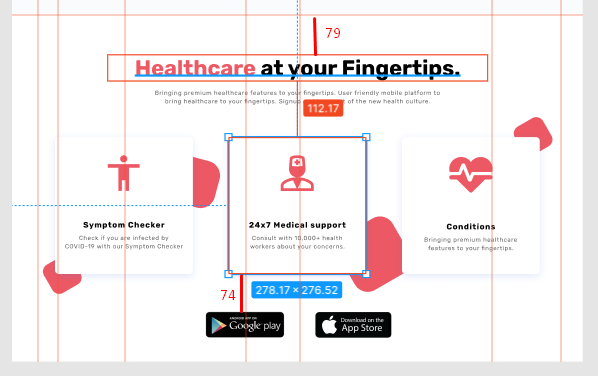

Секция-4
Создание структуры
Завершающий блок назовем healthcare
Сразу сделаем ограничивающий контейнер healthcare__container
Копируем и переносим классы для текстового блока. Здесь нет кнопки и блок полностью отцентрован - добавим модификатор block-text_center, мы по нему отцентруем этот текстовый блок. Также уберем модификатор у заголовка block-text__title_blue, т.к. здесь выделение у нас красным по умолчанию. И перенесем с макета контент
Стилизация текстового блока
Стили текстового блока у нас, собственно, также уже готовы и автоматически применились к этому блоку. Единственное, что - это добавим селектор block-text_center, чтобы отцентровать текст
Здесь хорошо бы было ограничить ширину. Повесим модификатор block-text__text_mw

Соответственно, зададим ширину и выставим текст под заголовком по центру
Нижний отступ от текста до карточек

Карточки. Структура.
Продолжим и сделаем структуру для карточек. Здесь декор я буду делать по примеру прошлого блока, но буду уже использовать псевдо-элементы - это будет еще одним вариантом, чтобы у вас было больше разнообразия.

Сделаем папку "healthcare_img" для иконок и выгрузим их.
Сразу выгружу и иконки для футера "google-play" и "app-store" в общую папку "img", где у нас расположен логотип. Они будут в формате png.
Начинаем атаковать блок с карточками. Здесь я сделаю одинаковые отступы по 30 пикселей слева-справа

Но, для начала, сделаем общий блок для карточек healthcare__items

Внутри будет иконка и контент
Скопируем еще 2 раза и перенесем контент
Структуру мы создали. Можно перенести классы и заверстать

Карточки. Стилизация.
Расположим карточки по горизонтали
Работаем со стилями блоков


Отступ от иконки до текста 58 пикселей

Выставим иконки и текст по центру карточки. А также установим отступы у самого блочка - 17 и 36 пикселей

Расположим карточки равномерно по центру через общую ширину
Для получения отступов между карточками в 72 пикселя мы используем gap
- gap
- Задаёт отступы между столбцами и строками, а не вдоль края контейнера сетки. Является сокращением для свойств row-gap (устанавливает промежуток между рядами) и column-gap (устанавливает промежуток между колонками).
Заголовок

Текст. Тут стоит добавить только высоту строки и межбуквенное расстояние. Также 4 пикселя - расстояние между заголовком и текстом

Что касается использования gap - есть риск, что что-то пойдет не так на одном из браузеров. Поэтому, я покажу еще один вариант. Для этого нам нужно завернуть наши контентные блоки в колонки healthcare__column дополнительно.

Для колонок задаем внутренний боковой отступ в 36 пикселей. gap тогда закомментируем и вместо центрования колонок, в общем блоке задать отрицательный margin для компенсации, И у нас между колонками выставилось расстояние, но сами колонки съехали влево


Чтобы теперь выровнять колонки, мы заберем ограничение по ширине max-width у общего блока healthcare__items, а также заберем ширину у пунктов healthcare__item и передадим ее колонкам healthcare__column. Тогда все опять получается


Но, поскольку в макете у нас и так есть боковые отступы, то мы можем убрать отрицательный боковой margin у общего блока healthcare__items. Тогда мы получим более безопасные отступы, не нарушая картины

Но, gap, мне кажется, уже можно использовать для флексов. Говорю с пониманием того, что на каком-то Safari стареньком, там может не сработать. Если вам по заказу не нужно такое поддерживать, то вы можете gap использовать.
Главные отступы: 79 сверху и 74 снизу. По 75 сделаем
